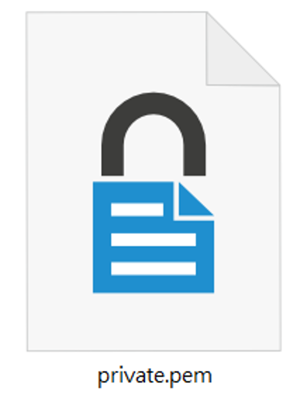
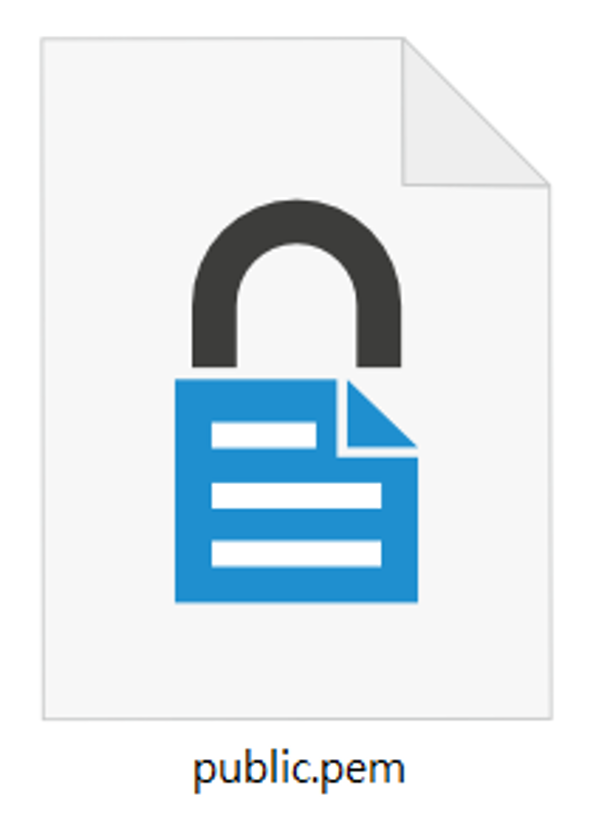
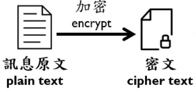
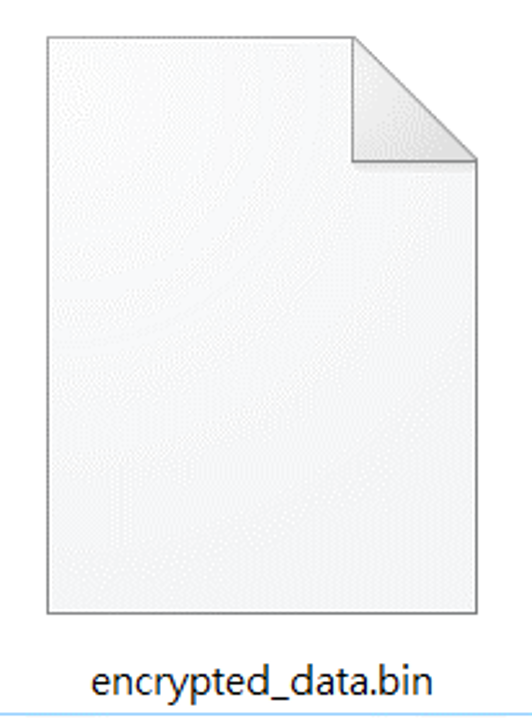
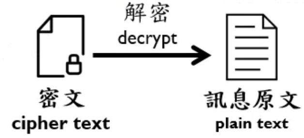

Alice想傳送訊息給Bob，但Bob尚未擁有公鑰、私鑰。
第一步（接收方視角）：Bob 產生公鑰及私鑰，並將公鑰發布於公開的網際網路中。
金鑰長度越長，越可以減少被破解的機會，典型的 RSA 金鑰大小為 1,024 或 2,048 或 4,096 位元。
請選擇任一金鑰長度後，分別將兩塊程式碼拼圖拖曳正確的虛框中。
Bob寫程式產生公私鑰
實際上可以藉由軟體操作產生公私鑰，省去親手寫程式的步驟。
例如： Kleopatra 加解密軟體。
例如： Kleopatra 加解密軟體。
|
from Crypto.PublicKey import RSA # 產生 1024、2048或4096 位元 RSA 金鑰 key = RSA.generate( ) |
|
| 產生Bob私鑰 | |
| 產生Bob公鑰 | |
|
#看看印出的公私鑰，和.pem檔案中的內容是否一樣 print('private.pem檔案中的內容為:\n',privateKey.decode('utf-8')) print('\npublic.pem檔案中的內容為:\n’,publicKey.decode('utf-8')) |
| 拖曳區：程式碼拼圖 | |
|
privateKey = key.export_key()
with open("private.pem", "wb") as f: f.write(privateKey) |
publicKey = key.publickey().export_key()
with open("public.pem", "wb") as f: f.write(publicKey) |
Bob的電腦產生兩個金鑰檔


執行結果：除了印出檔案內容外，Bob的本機端會產生private.pem、public.pem 兩個檔案。
第二步（接收方視角）：Bob 將金鑰發布於公開的網際網路中。
咦？現在Bob有公鑰及私鑰，他要發布哪份金鑰檔呢？
在此以「雲朵」表示公開的網際網路，請將正確的金鑰檔拖曳至雲朵中央，表示發布至公開網際網路。
Bob要將哪份金鑰檔發布於公開的網際網路中呢?
| 拖曳區：Bob目前擁有的金鑰檔 | |
|
|
|
Alice取得Bob的公鑰，撰寫明文後加密檔案，傳送給Bob。
第一步（傳送方視角）： Alice於公開的網際網路中取得Bob的公鑰。
Alice取得Bob公鑰
第二步（傳送方視角）： Alice 撰寫明文並使用公鑰加密為檔案。
Alice寫程式加密檔案
實際上，你可以使用其他軟體來加密文件，而不需要親自撰寫程式碼。
例如： Kleopatra 加解密軟體。
例如： Kleopatra 加解密軟體。
|
from Crypto.PublicKey import RSA from Crypto.Cipher import PKCS1_OAEP import base64 # 將明文存入二進位檔案中 with open("encrypted_data.bin", "wb") as f: # 輸入欲傳遞的訊息(限英數文字) message = b’This is my secret.’ |
|
| 讀取Bob公鑰 | |
|  | |
|
f.write(ciphertext) print(base64.b64encode(ciphertext)) |
| 拖曳區：程式碼拼圖 | |
|
# 使用 PKCS1_OAEP 模組，透過金鑰變數(key)建立一個加密器(cipher)。
cipher = PKCS1_OAEP.new(key) ciphertext = cipher.encrypt(message) |
key = RSA.importKey(open('public.pem').read())
|
Alice的電腦產生密文檔

執行結果(Alice 的本機端會產生名為「encrypted_data.bin 」的密文檔，並印出該檔內容):
第三步（傳送方視角）： Alice 將密文檔傳送給Bob。
Alice傳送密文檔給Bob
第一步（接收方視角）： Bob 使用私鑰解密檔案，印出明文。
請從右方拖曳區選擇一個符合該行程式碼的執行動作，以完成解密。
 Bob寫程式解密檔案
Bob寫程式解密檔案
實際上，你可以使用其他軟體來解密文件，而不需要親自撰寫程式碼。
例如： Kleopatra 加解密軟體。
例如： Kleopatra 加解密軟體。
|

|
from Crypto.PublicKey import RSA from Crypto.Cipher import PKCS1_OAEP # 從encrypted_data.bin檔案讀取密文內容 with open("encrypted_data.bin", "rb") as f: ciphertext = f.read(-1) key = RSA.importKey(open('private.pem').read()) # 使用 PKCS1_OAEP 模組，透過金鑰變數(key)建立一個解密器(cipher)。 cipher = PKCS1_OAEP.new(key) message = cipher.decrypt(ciphertext) print(message.decode("utf-8")) |
| 拖曳區：程式碼拼圖 | |
|
讀取Bob私鑰
|
讀取Bob私鑰
|
Bob得知明文
執行結果: